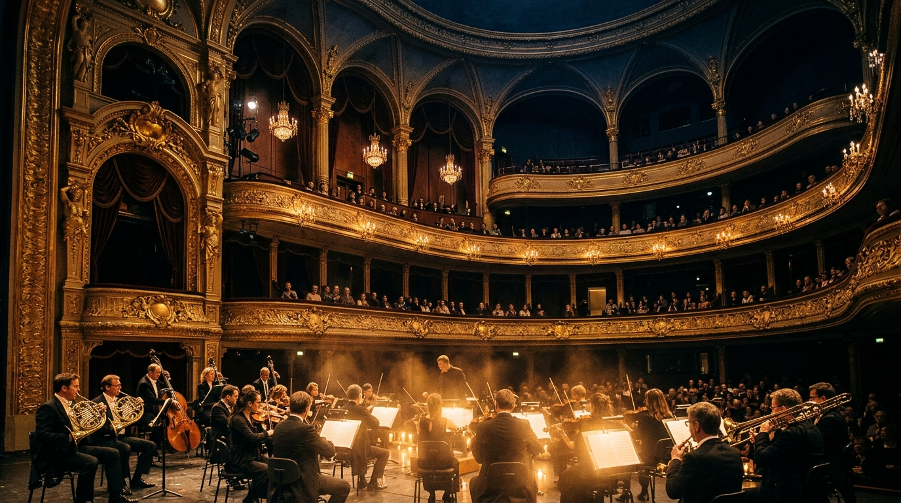
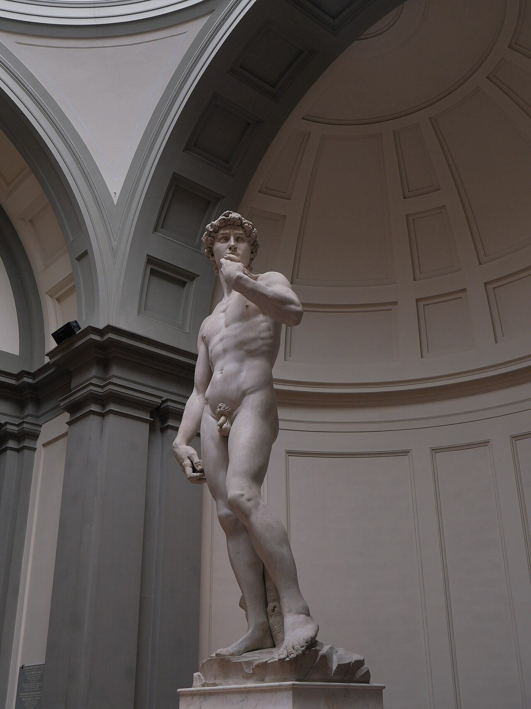
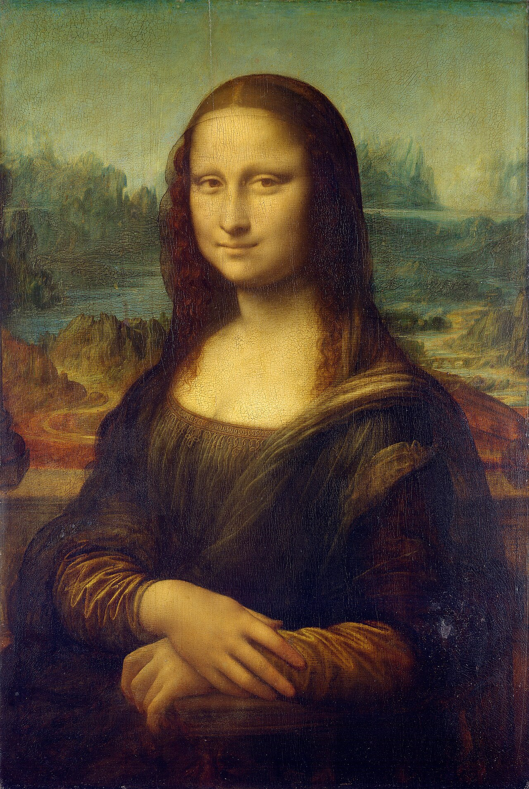
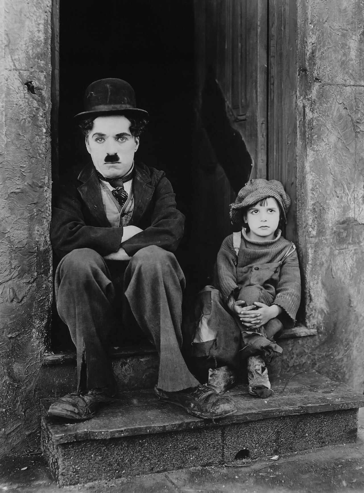

Disciplinas de la Creación Humana
Desliza el carrete o haz clic en cualquier obra para actualizar el escaparate
Música Clásica
«Arquitectura sonora donde el intelecto y la pasión visceral se encuentran en comunión.»
Entrar a la Odisea →
Escultura
«La conquista de la masa, el vacío tridimensional y la tensión táctil en la piedra.»
Ver Ficha de Módulo →
Pintura
«La conquista del plano bidimensional a través de la luz, el pigmento y la perspectiva.»
Ver Esquema →Literatura
«La tecnología de la conciencia humana: arquitectura verbal y polifonía narrativa.»
Ver Esquema →
Cine
«La escultura del tiempo en veinticuatro cuadros por segundo y el choque dialéctico del montaje.»
Ver Esquema →La Matriz Didáctica en 8 Capítulos
La arquitectura pedagógica que comparten todas las disciplinas del portalLos Fundamentos
Desmitificación de prejuicios elitistas. Definición operativa en sentido estricto y amplio.
Timeline Histórico
Macro-cronología viva desde los orígenes rituales de la humanidad hasta la vanguardia contemporánea.
El Decodificador
La piedra roseta técnica: nomenclatura, herramientas, cánones, catálogos y formatos explicados.
Los Titanes Cardinales
Galería de figuras universales con iconografía histórica fidedigna, etapas creativas y obras cumbre.
Historias & Contexto
La realidad material detrás de las obras: guerras, revoluciones y distinción entre hecho y mito.
Laboratorio de Apreciación
Guía de experimentación activa en capas: cómo desglosar una obra con mirada crítica profunda.
Cultura Contemporánea
Conexión con el presente: cómo los grandes códigos clásicos moldean el diseño y los medios actuales.
Glosario & Filosofía
Léxico musicológico y artístico riguroso, atribuciones de dominio público y reflexión humanista.